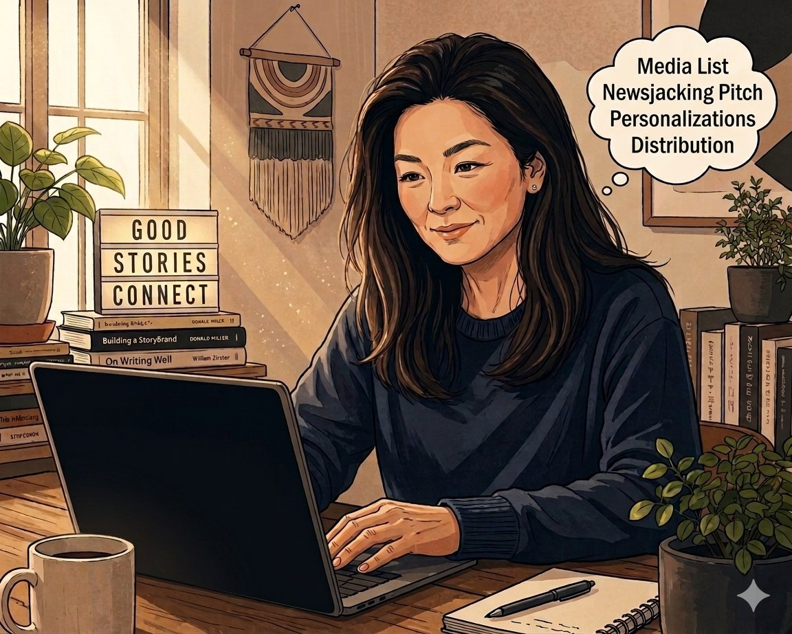

Ex-journalist. Current PR specialist. I bring a reporter's instinct to every pitch, press release, and media relationship I build.

Writing Samples
In this industry, 'show' beats 'tell' every time. So here are some examples of my work.
Agents gone wild? Why AI agents need a 'passport'
AI governance client perfectly positioned to describe the risks of AI agents running loose.
Associated Press reached out to speak to the CEO.
From Vancouver to viral: AI 'samaritan' hits 1M subscribers and 155M views
A local 'Chief AI Officer' built up a cult following by releasing byte-sized AI tutorials, reaching a milestone of 150 million+ views.
Read sampleThe cookie is dead. Advertisers can leverage new targeting tools to get back to brand building — Marketing Mag
Helping shape client's voice in the digital advertising space as Google got close to deprecating cookies.
Read sampleHey there, your inventory is showing
Covid led to product shortages (what do you mean you're out of toilet paper?) but also another problem for businesses: excess inventory. A Supply Chain AI startup had proprietary data that captured this problem.
Read sampleMeet the expert demystifying government purchases for small businesses — Forbes
Small business sentiment was at an 11-year low. The feds allocated nearly $1B for SBA lending. But there was another way to boost optimism: make it easy for SMBs to sell to the world's biggest customer — government. The pitch landed the client a feature in Forbes.
Read sampleI quit my corporate job to start my own event planning company, failed, then tried again — Business Insider
CEO of Shift + Alt started an event planning company, leaving behind a lucrative career in investment banking. The story made for a perfect 'As-Told-To' pitch for Business Insider.
Read sampleHighlighting the individual expertise of several architects
Architecture firm wanted to amplify its healthcare design expertise. Pitching the firm's expertise on Indigenous design and inclusivity proved to be a successful angle.
Read sampleAbout Me
I started my career writing scripts for TV and radio newscasts: tracking down breaking stories, writing on deadline, and most importantly — identifying the headline-worthy angle.
Today, I apply that same editorial lens to PR. I don't pitch products. I don't pitch feature updates. I pitch the news hook, craft the narrative, and give journalists a story they'll actually want to cover.
Gauging the newsy angle around product launches, data stories, reactive moments.
Crisp, direct, reporter-friendly. From 3-line emails to full press releases.
Spotting trending stories and positioning clients as the expert voice.
Research and identify targeted journalists for each pitch.
Turning proprietary data into data-driven angles journalists love.
Media training company leaders for interviews, on message and camera-ready.
Experience
Contact
Reach out. I'd love the opportunity to answer that question, and any others you might have about my skills and qualifications.